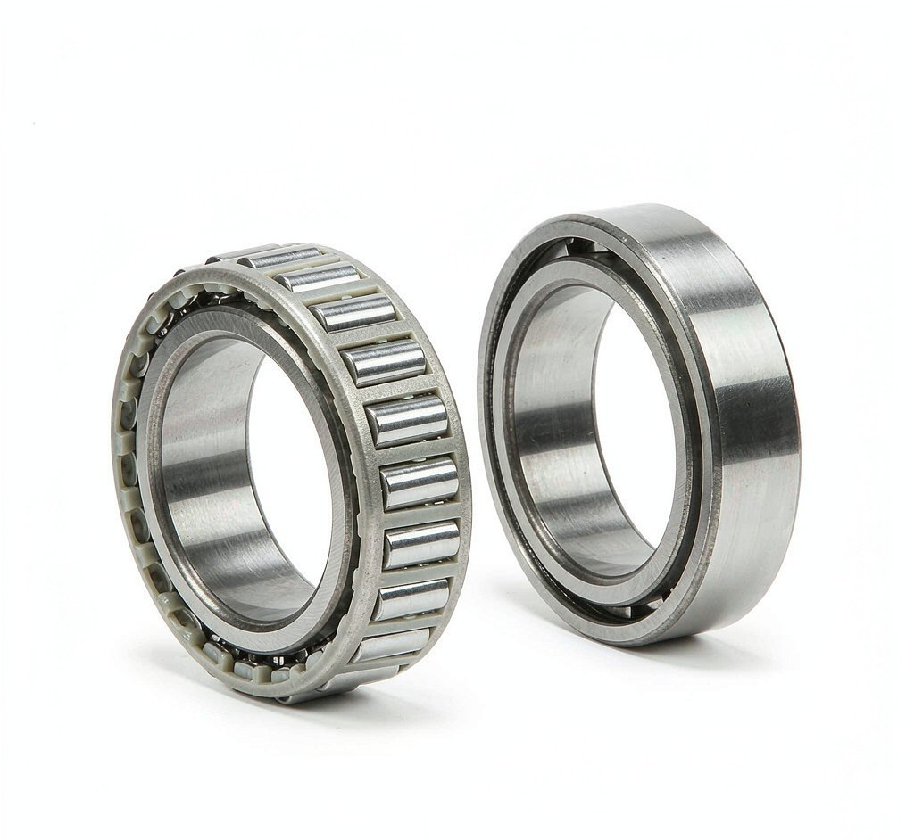

製品 · 円鍥ころ軸受
テーパころベアリングは、テーパ軌道面の頂点が軸上の共通点で交わる構造のため、ラジアル荷重と一方向アキシアル荷重の複合荷重を受けます。フェース・トゥ・フェースまたはバック・トゥ・バックで取り付けると、より高い剛性で両方向アキシアル荷重を受け、4列タイプは圧延機に用いられます。
| サイズ範囲 | 内径 d 15–300 mm · 外径 D 42–540 mm · 幅 B 14–234.95 mm · 高さ T 14.25–234.95 mm (本ページに掲載のサイズ範囲。その他のサイズはご注文に応じて製作) |
| モデル適用範囲 | 呼び番号は貴社図面またはサンプルにて確認します。本ページのサイズはd／D／Bで照合され、非標準サイズも提供可能です。 |
| 精度等級 | P0標準；P6／P5は受注対応（精密タイプはP4） |
| すきまグループ | C0／C2／C3／C4（用途に合わせて選定） |
| 재료 | GCr15高炭素クロム鋼／浸炭鋼（オプション） |
| 保持器 | プレス鋼／真鍮／ポリアミド（種類・用途による） |
| 熱処理 | 焼入れ・焼戻し、58–64 HRC、寸法安定化 |
| 規格 | GB/T 307／ISO 492（該当する場合） |
このベアリングタイプの用途
ホイールハブ・ギアボックス・ディファレンシャル・アクスル
掘削機走行駆動装置・ローダートランスミッション
圧延機（4列）、キャスターローラーテーブル
トラクター・収穫機駆動装置および走行装置
ヨー・ピッチ駆動装置、ギアボックス
ギアボックス・コンベヤ・巻上設備
最小注文数量、見積もり、梱包
お客様の図面またはサンプルに合わせて製作
モデル（または図面）と数量だけで十分です。24時間以内にご返信します
標準モデルは小ロットから注文可能で、カスタムベアリングはサイズあたり50個から承ります。在庫モデル7～15日、カスタム25～45日。材料・検査レポートはご依頼に応じて提供します。
このベアリングタイプに関するよくある質問
本ページに掲載のサイズは次のとおりです。内径 d 15–300 mm · 外径 D 42–540 mm · 幅 B 14–234.95 mm · 高さ T 14.25–234.95 mm (本ページに掲載のサイズ範囲。その他のサイズはご注文に応じて製作)。より大きいサイズや中間サイズは図面により製作します。d／D／Bと荷重条件をお送りいただければ、供給可否を書面で確認いたします。
P0が標準で、P6／P5はご注文に応じて対応します（精密タイプはP4）。図面に必要な等級をご指定いただければ、別項目としてお見積もりします。
はい。サンプル注文は1個から可能で、非標準ベアリングは図面またはサンプルにより製作します。価格・納期・支払条件は、お支払い前に書面で確認いたします。
全範囲をワンストップで